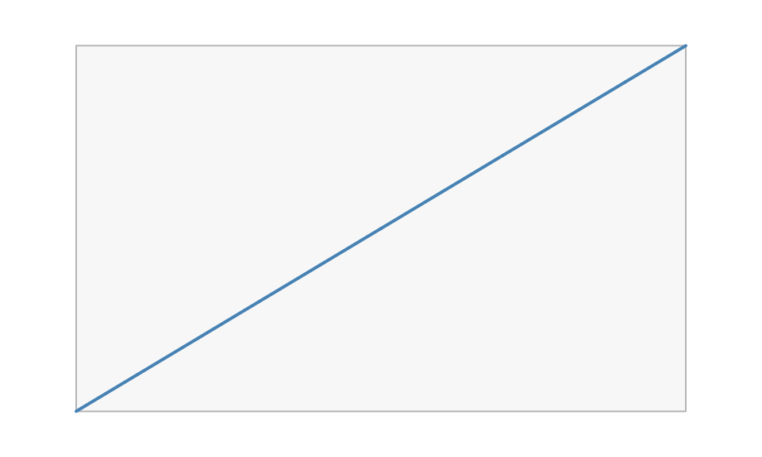

vellum sits at grid’s level of the stack: units, viewports, grobs, layout, and rendering. If you know grid, most concepts carry over directly. This guide maps the vocabulary and then flags the handful of places where vellum works differently on purpose.
The concept map
| grid | vellum | notes |
|---|---|---|
grid.newpage() |
vl_scene() |
vellum’s scene also fixes page size, background, and dpi up front |
unit(1, "native") |
vl_unit(1, "native") |
same idea; each element carries its own unit |
viewport() |
vl_viewport() |
region with its own xscale / yscale
|
pushViewport() / popViewport()
|
push() / pop()
|
functional: they take and return a scene, no global stack |
grid.rect(), grid.circle(), … |
rect_grob(), circle_grob(), … plus
draw()
|
the constructor builds a value; draw() adds it |
rectGrob(), gTree()
|
rect_grob(), the scene tree |
grobs are immutable S7 values |
gpar() |
vl_gpar() |
familiar fields; fill also accepts gradients |
grid.layout() |
grid_layout() |
flexible "null" tracks work the same |
grid.edit() / editGrob()
|
edit_node() |
edit by name; copy-on-modify, not in place |
grid.grabExpr() / display list |
the retained scene | the tree is the model; nothing is replayed |
grid.locator() |
hit_test() |
exact geometric picking, not one interactive click |
device (png(), pdf(), …) |
render(scene, path) |
the extension picks the backend |
Side by side
A minimal grid plot and its vellum translation. In grid:
library(grid)
grid.newpage()
pushViewport(viewport(width = 0.8, height = 0.8,
xscale = c(0, 10), yscale = c(0, 20)))
grid.rect(gp = gpar(fill = "grey97", col = "grey70"))
grid.lines(x = unit(0:10, "native"), y = unit((0:10) * 2, "native"),
gp = gpar(col = "steelblue", lwd = 2))
popViewport()The same scene in vellum:
vl_scene(5, 3, bg = "white") |>
push(vl_viewport(width = 0.8, height = 0.8,
xscale = c(0, 10), yscale = c(0, 20))) |>
draw(rect_grob(gp = vl_gpar(fill = "grey97", col = "grey70"))) |>
draw(lines_grob(x = vl_unit(0:10, "native"), y = vl_unit((0:10) * 2, "native"),
gp = vl_gpar(col = "steelblue", lwd = 2))) |>
pop()
The shapes are the same; the difference is that the vellum version is one expression that returns a scene value, with no global device or viewport stack mutated along the way.
What is different, and why
The builder is functional, not stateful
grid keeps a global viewport stack and a display list:
pushViewport() mutates state, and each grid.*
call paints into the current device. vellum’s push(),
draw(), and pop() each take a scene and return
a new one. There is no “current viewport” to lose track of, the pipe
is the tree, and a scene is an ordinary value you can store,
pass around, and branch from.
Metrics are eager, so there is no draw-time hook protocol
grid cannot know a grob’s size until a device and viewport exist at
draw time, which is why it has lazy units and the
makeContext / makeContent /
widthDetails hook protocol, and why it replays the whole
display list on resize. vellum resolves text and object metrics in
process, up front, so a grob knows its extent when you build it. You
measure with vl_strwidth() or size a unit by a grob’s
extent with grobwidth() / grobheight()
immediately, without an open device.
Units resolve eagerly, and mixed-unit arithmetic is restricted
Because units resolve eagerly to a flat representation, vellum will
not defer vl_unit(1, "npc") - vl_unit(2, "mm") the
way grid does. Same-space arithmetic and absolute-plus-absolute both
work (vl_unit(10, "mm") + vl_unit(1, "in") gives
35.4mm), but mixing a relative and an absolute unit in one
expression is reported rather than guessed.
vl_unit(10, "mm") + vl_unit(1, "in") # absolute + absolute -> mm
#> <vellum_unit[1]>
#> [1] 35.4mm
vl_unit(1:3, "cm") * 2 # scaling is fine
#> <vellum_unit[3]>
#> [1] 20mm 40mm 60mmIf you have grid code that offsets a relative position by an absolute
amount, compose it at the viewport or native level instead of in a
single unit expression. This is the change most likely to
surface when porting grid code.
The tree is retained and inspectable
grid’s rendered output is pixels plus a display list. vellum keeps
the scene as an immutable tree you can query and edit after the fact:
node_names(), get_node(),
edit_node(), hit_test(), and
scene_model(). There is no grid.force() step,
and editing a node copies rather than mutating in place. See
vignette("retained-mode") for what this enables.
vl_gpar inherits, but there is no cascade
vl_gpar() inheritance works as in grid: a field left
NULL is inherited from the enclosing viewport, and
alpha multiplies down the tree. vellum does not add a
CSS-like cascade with selectors or theme objects at this layer; that is
a grammar-layer concern.
Do I have to rewrite my grid code?
Not necessarily. If you already have grid, ggplot2, or lattice
output, you can render it through vellum’s backend without
porting anything, using as_vellum() and
render_grid(). See vignette("grid-interop").
Rewriting in the native API is worth it when you want the retained-tree
features (naming, editing, hit-testing) or deterministic multi-backend
output. ```